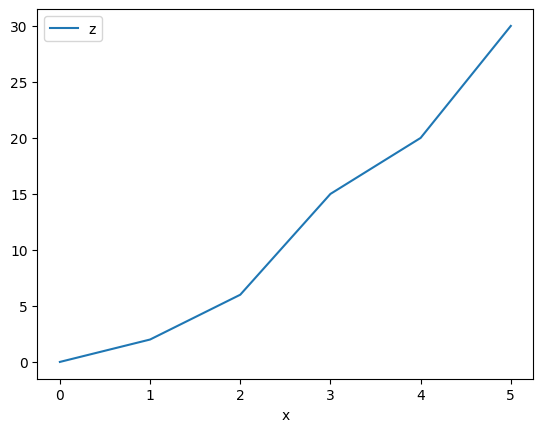

pandas
see: https://pandas.pydata.org/pandas-docs/stable/
[1]:
import pandas as pd
from smpl import io
Read
[2]:
data = pd.read_csv(io.find_file('test_linear_data2.txt',3),delimiter=" ")
data
[2]:
| x | y | dx | dy | |
|---|---|---|---|---|
| 0 | 0 | 1 | 0.1 | 0.2 |
| 1 | 1 | 2 | 0.2 | 0.1 |
| 2 | 2 | 3 | 0.3 | 0.1 |
| 3 | 3 | 5 | 0.1 | 0.4 |
| 4 | 4 | 5 | 0.1 | 0.1 |
| 5 | 5 | 6 | 0.1 | 0.2 |
[3]:
data['z'] = data['x']*data['y']
data
[3]:
| x | y | dx | dy | z | |
|---|---|---|---|---|---|
| 0 | 0 | 1 | 0.1 | 0.2 | 0 |
| 1 | 1 | 2 | 0.2 | 0.1 | 2 |
| 2 | 2 | 3 | 0.3 | 0.1 | 6 |
| 3 | 3 | 5 | 0.1 | 0.4 | 15 |
| 4 | 4 | 5 | 0.1 | 0.1 | 20 |
| 5 | 5 | 6 | 0.1 | 0.2 | 30 |
[4]:
data.describe()
[4]:
| x | y | dx | dy | z | |
|---|---|---|---|---|---|
| count | 6.000000 | 6.000000 | 6.000000 | 6.000000 | 6.000000 |
| mean | 2.500000 | 3.666667 | 0.150000 | 0.183333 | 12.166667 |
| std | 1.870829 | 1.966384 | 0.083666 | 0.116905 | 11.634718 |
| min | 0.000000 | 1.000000 | 0.100000 | 0.100000 | 0.000000 |
| 25% | 1.250000 | 2.250000 | 0.100000 | 0.100000 | 3.000000 |
| 50% | 2.500000 | 4.000000 | 0.100000 | 0.150000 | 10.500000 |
| 75% | 3.750000 | 5.000000 | 0.175000 | 0.200000 | 18.750000 |
| max | 5.000000 | 6.000000 | 0.300000 | 0.400000 | 30.000000 |
[5]:
data.plot(x='x',y='z')
[5]:
<AxesSubplot:xlabel='x'>

To Latex
[6]:
df = pd.DataFrame({'name': ['Raphael', 'Donatello'],
'mask': ['red', 'purple'],
'weapon': ['sai', 'bo staff']})
print(df.to_latex())
\begin{tabular}{llll}
\toprule
{} & name & mask & weapon \\
\midrule
0 & Raphael & red & sai \\
1 & Donatello & purple & bo staff \\
\bottomrule
\end{tabular}
/tmp/ipykernel_1530/2409192922.py:6: FutureWarning: In future versions `DataFrame.to_latex` is expected to utilise the base implementation of `Styler.to_latex` for formatting and rendering. The arguments signature may therefore change. It is recommended instead to use `DataFrame.style.to_latex` which also contains additional functionality.
print(df.to_latex())
Needs
[ ]:
pandas + uncertainties
[7]:
import uncertainties.unumpy as unp
[8]:
rdata = pd.read_csv(io.find_file('test_linear_data2.txt',3),delimiter=" ")
data = pd.DataFrame()
data['x'] = unp.uarray(rdata['x'],rdata['dx'])
data['y'] = unp.uarray(rdata['y'],rdata['dy'])
data['z'] = data['x']*data['y']
data
[8]:
| x | y | z | |
|---|---|---|---|
| 0 | 0.00+/-0.10 | 1.00+/-0.20 | 0.00+/-0.10 |
| 1 | 1.00+/-0.20 | 2.00+/-0.10 | 2.0+/-0.4 |
| 2 | 2.00+/-0.30 | 3.00+/-0.10 | 6.0+/-0.9 |
| 3 | 3.00+/-0.10 | 5.0+/-0.4 | 15.0+/-1.3 |
| 4 | 4.00+/-0.10 | 5.00+/-0.10 | 20.0+/-0.6 |
| 5 | 5.00+/-0.10 | 6.00+/-0.20 | 30.0+/-1.2 |
[9]:
data.describe()
[9]:
| x | y | z | |
|---|---|---|---|
| count | 6 | 6 | 6 |
| unique | 6 | 6 | 6 |
| top | 0.00+/-0.10 | 1.00+/-0.20 | 0.00+/-0.10 |
| freq | 1 | 1 | 1 |
Error once with variance and once without: \(nerr=\sqrt{\text{var}^2+\text{err}^2}\)
[10]:
from smpl import stat
print(stat.novar_mean(data['x']))
print(stat.mean(data['x']))
2.50+/-0.07
2.5+/-1.9
[11]:
print(data.to_latex())
\begin{tabular}{llll}
\toprule
{} & x & y & z \\
\midrule
0 & 0.00+/-0.10 & 1.00+/-0.20 & 0.00+/-0.10 \\
1 & 1.00+/-0.20 & 2.00+/-0.10 & 2.0+/-0.4 \\
2 & 2.00+/-0.30 & 3.00+/-0.10 & 6.0+/-0.9 \\
3 & 3.00+/-0.10 & 5.0+/-0.4 & 15.0+/-1.3 \\
4 & 4.00+/-0.10 & 5.00+/-0.10 & 20.0+/-0.6 \\
5 & 5.00+/-0.10 & 6.00+/-0.20 & 30.0+/-1.2 \\
\bottomrule
\end{tabular}
/tmp/ipykernel_1530/464907517.py:1: FutureWarning: In future versions `DataFrame.to_latex` is expected to utilise the base implementation of `Styler.to_latex` for formatting and rendering. The arguments signature may therefore change. It is recommended instead to use `DataFrame.style.to_latex` which also contains additional functionality.
print(data.to_latex())
[ ]:
pandas + plot
[12]:
from smpl import plot
plot.data(data['x'],data['y'])
plot.data(data['x'],data['z'])
[ ]: